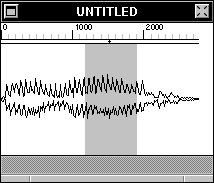

The Ruler

Sound windows may display a Sound Ruler above the sound.
 This ruler is divided into major and minor ticks, with the major ticks labeled if there is enough space.
This ruler is divided into major and minor ticks, with the major ticks labeled if there is enough space.
 The minor tick spacing may be any number of seconds, samples, or percentage of the whole sound. Major tick spacing is in number of minor ticks. Displayed above is a 100-sample spacing for minor ticks and 10-minor-tick spacing for major ticks, for the word "Hello".
The minor tick spacing may be any number of seconds, samples, or percentage of the whole sound. Major tick spacing is in number of minor ticks. Displayed above is a 100-sample spacing for minor ticks and 10-minor-tick spacing for major ticks, for the word "Hello".
 Below the ticks is a small strip containing the play mark. If a sound is being played, the play mark reflects the current sample being played at any particular moment. If the Marks Inspector
Below the ticks is a small strip containing the play mark. If a sound is being played, the play mark reflects the current sample being played at any particular moment. If the Marks Inspector  has been set to auto-scroll while playing, the window will automatically scroll if possible to keep the play mark on the left-hand side of the screen.
has been set to auto-scroll while playing, the window will automatically scroll if possible to keep the play mark on the left-hand side of the screen.
To change or display the ruler, use the Marks Inspector: